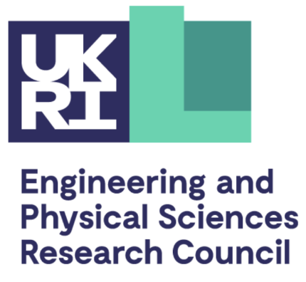
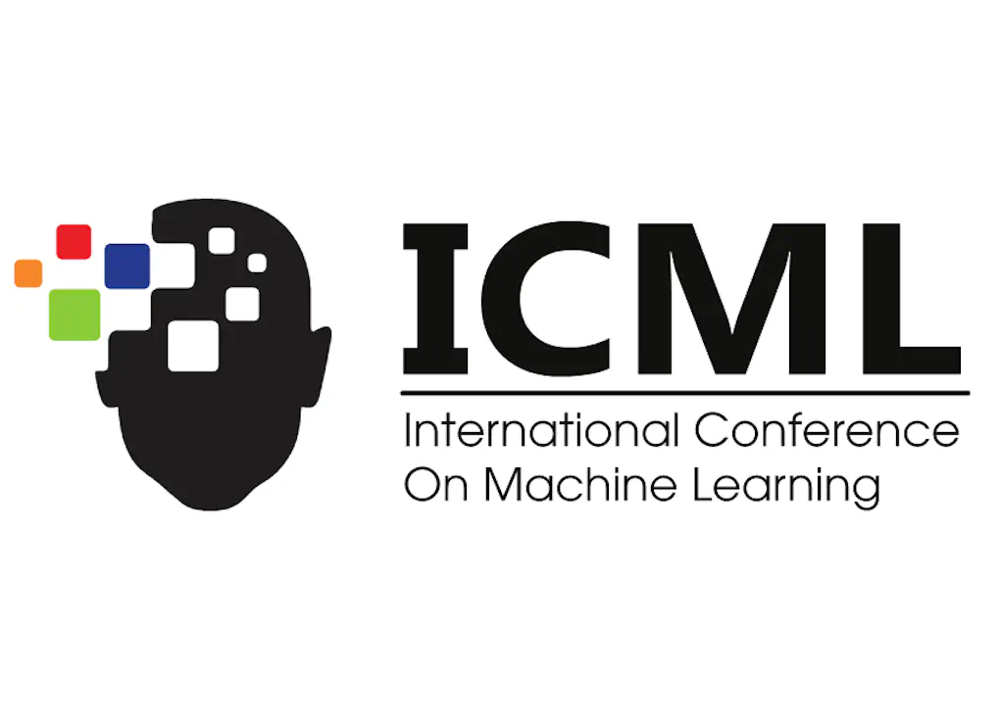

Oct. 2020 - June. 2024
Dingmin Wang (汪鼎民）
Biography
I am an applied scientist at AWS AI Labs in the Amazon Q Developer team based in the Bay Area, CA, United States. I am currently working on large language models (LLMs) for code.
I got my DPhil (a.k.a Ph.D) degree at Department of Computer Science , University of Oxford in Jun 2024, where I was fortunate to be supervised by Bernardo Cuenca Grau and Przemysław Andrzej Wałęga. My DPhil studies at Oxford are conducted under the auspices of an EPSRC Studentship. I am also fortunate to be selected as a member of 2020 Oxford Clarendon Scholars. In particular, I gained rich research and development experience through working and interning at multiple top-tier tech companies, including Google Research, Amazon, Microsoft Research, and Tencent (full-time researcher for two years before my Ph.D). I obtained my M.Eng. degree from Department of Computer Science, Tsinghua University in 2018.
Recent News
(Scroll down for more ...) ⬇️
-
2024.07: üéâüéâ A first-author paper got accepted by the Special Track on Reasoning, Learning, & Decision Making of the 21st International Conference on Principles of Knowledge Representation and Reasoning (KR-24). The acceptance rate was 17%.
-
2024.06: üéâüéâüå∫üå∫ I was granted Leave to Supplicate by University of Oxford, meaning that I am officially Dr. Wang now.
-
2024.05: üéâüéâ A first-author paper got accepted by the 62nd Annual Meeting of the Association for Computational Linguistics (ACL 2024). My another first-authorTACL paper will also be presented in ACL 2024. See you in Bangkok, Thailand.
-
2024.05: üéâ A co-author paper got accepted by the Applied Data Science (ADS) Track of 2024 ACM SIGKDD International Conference on Knowledge Discovery and Data Mining (KDD 2024). The acceptance rate was 20%.
-
2024.05: üéâüéâ A first-author journal paper got accepted by Theory and Practice of Logic Programming.
-
2023.12: A first-author journal paper got accepted by Transactions of the Association for Computational Linguistics (TACL).
-
2023.12: üéâ A co-author paper got accepted by the 39th Annual AAAI Conference on Artificial Intelligence (AAAI 2024). The overall acceptance rate was 23.75%.
2023.11: üéâüéâüéâ üéñÔ∏èüéñÔ∏è Extremely honored to receive 2023 Chinese Government Award for Outstanding Self-financed Students Abroad. Each year, the award globally recognizes 650 outstanding students.
-
2023.09: Happy to receive the NeurIPS 2023 Scholar Award. See you in New Orleans, Louisiana, USA.
-
2023.09: üéâüéâ A first-author paper got accepted by the Thirty-seventh Annual Conference on Neural Information Processing Systems (NeurIPS 2023). The overal acceptance rate was 26%.
-
2023.05: üéâüéâ A first-author paper got accepted by 26th European Conference on Artificial Intelligence (ECAI 2023). The overall acceptance rate was 23%.
-
2022.11: üéâüéâ first-author and one co-author paper got accepted by the 38th Annual AAAI Conference on Artificial Intelligence (AAAI 2023) as oral presentation. The overall acceptance rate was 19.6%.
Selected Publications
Please see my full list at [Google Scholar Profile]2024
MTLearn: Extracting Temporal Rules Using Datalog Rule Learners [CODE]
Dingmin Wang, Przemyslaw Walega, Bernardo Cuenca Grau
In Proceedings of the 21st International Conference on the Principles of Knowledge Representation and Reasoning (KR 2024)
Contextual Distillation Model for Diversified Recommendation
Fan Li, Xu Si, Shisong Tang, Dingmin Wang, Kunyan Han, Bing Han, Guorui Zhou, Yang Song, Hechang Chen
In Proceedings of the ACM SIGKDD International Conference on Knowledge Discovery and Data Mining (KDD 2024)
Fine-tuning Language Models for Joint Rewriting and Completion of Code with Potential Bugs [CODE]
Dingmin Wang, Jinman Zhao, Hengzhi Pei, Samson Tan, Sheng Zha
In Findings of the 62nd Annual Meeting of the Association for Computational Linguistics (ACL 2024 Findings)
Retrieve What You Need: A Mutual Learning Framework for Open-domain Question Answering [CODE]
Dingmin Wang, Qiuyuan Huang, Matthew Jackson, Jianfeng Gao
Transactions of the Association for Computational Linguistics (TACL 2024)
Working Memory Capacity of ChatGPT: An Empirical Study [CODE]
Dongyu Gong, Xingchen Wan, Dingmin Wang
In Proceedings of the 39th Annual AAAI Conference on Artificial Intelligence (AAAI 2024)
2023
Calibrate and Boost Logical Expressiveness of GNN Over Multi-Relational and Temporal Graphs [CODE]
Dingmin Wang, Yeyuan Chen
In Proceedings of the Thirty-seventh Annual Conference on Neural Information Processing Systems (NeurIPS 2023)
Efficient Embeddings of Logical Variables for Query Answering over Incomplete Knowledge Graphs [CODE]
Dingmin Wang, Yeyuan Chen, Bernardo Cuenca Grau
In Proceedings of the 38th Annual AAAI Conference on Artificial Intelligence (AAAI 2024)
An Empirical Study of Retrieval-enhanced Graph Neural Networks [CODE]
Dingmin Wang, Shengchao Liu, Hanchen Wang, Bernardo Cuenca Grau, Linfeng Song, Jian Tang, Le Song, Qi Liu
In Proceedings of the 26th European Conference on Artificial Intelligence (ECAI 2023)
Counterfactual Video Recommendation for Duration Debiasing
Shisong Tang, Qing Li, Dingmin Wang, Ci Gao, Wentao Xiao, Dan Zhao, Yong Jiang, Qian Ma, Aoyang Zhang
In Proceedings of the ACM SIGKDD International Conference on Knowledge Discovery and Data Mining (KDD 2023)
2022
Knowledge-based Temporal Fusion Network for Interpretable Online Video Popularity Prediction
Shisong Tang, Qing Li, Xiaoteng Ma, Ci Gao, Dingmin Wang, Yong Jiang, Qian Ma, Aoyang Zhang, Hechang Chen
In Proceedings of the Web Conference 2022 (WWW 20222)
MeTeoR: Practical Reasoning in Datalog with Metric Temporal Operators [CODE]
Dingmin Wang, Pan Hu, Przemysław Andrzej Wałęga, Bernardo Cuenca Grau
In Proceedings of the 37th AAAI Conference on Artificial Intelligence (AAAI 2022)
2021 and before
Fast and Scalable Dialogue State Tracking with Explicit Modular Decomposition
Dingmin Wang, Chenghua Lin, Qi Liu, Kam-Fai Wong.
In Proceedings of 2021 Annual Conference of the North American Chapter of the Association for Computational Linguistics (NAACL 2021)
A Template-guided Hybrid Pointer Network for Knowledge-based Task-oriented Dialogue Systems [CODE]
Dingmin Wang, Ziyao Chen, Wanwei He, Li Zhong, Yunzhe Tao, Min Yang.
ACL 2021 Workshop on Document-Grounded Dialogue and Conversational Question Answering (DialDoc@ACL 2021)
Confusionset-guided Pointer Networks for Chinese Spelling Check[CODE]
Dingmin Wang, Yi Tay, Li Zhong.
In Proceedings of the 62nd Annual Meeting of the Association for Computational Linguistics (ACL 2019)
A Hybrid Approach to Automatic Corpus Generation for Chinese Spelling Check[CODE]
Dingmin Wang, Yan Song, Jing Li, Jialong Han, Haisong Zhang.
In Proceedings of the 2018 Conference on Empirical Methods in Natural Language Processing (EMNLP 2018)
Education


Aug. 2015 - Jun. 2018

Aug. 2011 - Jun. 2015
Work Experience
Google Research
Student Researcher, Apr. 2024 - Jul. 2024@London, UK
Tencent Cloud AI
Researcher, Jul. 2018 - Oct. 2020@Shenzhen, China
Tencent AI Lab
Research Intern, advised by Yan Song, Dec. 2017 - Jun. 2018@Shenzhen, China
The Chinese University of Hong Kong
Research Assistant, advised by Kam-Fai Wong and Gabriel Fung, Feb. 2017 - Dec. 2017@Hong Kong
Microsoft
Software Engineer Intern, advised by Martin Cai, Jun. 2015 - Aug. 2015@Beijing, China
Selected Honors & Awards
Clarendon Scholar
University of Oxford · 2020 – 2024

EPSRC Studentship
Engineering & Physical Sciences Research Council · Oct 2020 – Mar 2024

Outstanding Reviewer
ICML 2022
Chinese Government Award for Outstanding
Self-financed Students Abroad
Self-financed Students Abroad
China Scholarship Council · 2023
NeurIPS Scholar Award
NeurIPS Foundation · 2023

AAAI Student Scholarship
AAAI · 2022, 2023
ECAI Travel Award
EurAI· 2013
Professional Services
Program Committee Member
- 2024: AAAI, ACL Rolling Review
- 2023: AAAI, COMSYS, NeurIPS, ACL Rolling Review, Instruction@NeurIPS
- 2022: AAAI, ICML, WWW
- 2021 and before: EMNLP, AAAI, NLPCC
Journal Reviewer
- Transactions on Knowledge and Data Engineering (TKDE)
- Neurocomputing
- Transactions on Asian and Low-Resource Language Information Processing (TALLIP)
Tutorials
- Co-organizer, Tutorial titled Theory and Practice of Temporal Reasoning on KR 2022.